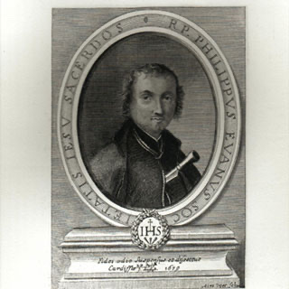

Mučenici iz Engleske i Walesa (10 svetaca)
Svećenik
Sv. Filip Evans
1645. – 1679.
Velški isusovac nakon školovanja i svećeničkoga ređenja služio je katolicima svoje domovine. Uhićen je tijekom progona i zatvoren u Cardiffu s Johnom Lloydom, s kojim je potom podnio mučeništvo.

Izvor slike
- Spomendan
- 22. srpnja
- Zaštitništvo
- Nije navedeno u izvoru
- Životni vijek
- 1645. – 1679.
- Djelovanje
- Misije i evangelizacija · Progoni i progonstvo · Mučeništvo
- Razdoblje
- 17. stoljeće
- Rođenje — dostupni podaci
- 1645.; dan i mjesec nisu potvrđeni u provjerenom izvoru.
- Mjesto rođenja
- Wales
- Datum smrti
- 22.07.1679.
- Mjesto smrti/mučeništva
- Gallows Field, Cardiff, Wales
- Okolnosti smrti/mučeništva
- Obješen i raščetvoren zbog katoličkoga svećeništva i djelovanja.
- Uloga
- Svećenik
- Mučenik
- Da
- Ostale oznake
- Mučenik engleskih protukatoličkih progona
- Pripadnost
- Isusovac
- Drugi oblici imena
- Philip Evans · Philip
Ovaj profil upućuje na zajednički izvor „Sveti John Lloyd i Philip Evans”. Slijedi životopis skupine ili zajednički prikaz mučeništva; zajednički podaci nisu svi osobni podaci ove osobe.
Zajednički životopis
Sveti John Lloyd i sveti Philip Evans, velški svećenici i mučenici, dali su svoj život za Krista Gospodina 22. srpnja 1679.
Sveti John Lloyd, velški svećenik i mučenik, rođen je u 17. stoljeću u velškoj pokrajini Powysu, u grofoviji Brecknockshire. Školovao se u belgijskom gradu Gentu, a od 1649. na Kraljevskom engleskom koledžu svetog Albana u španjolskom gradu Valladolidu. Tamo je zaređen za svećenika 7. lipnja 1653. Poslan je 1654. kao misionar u Wales, gdje je 24 godine služio kao svećenik prikrivenim katolicima. Uhićen je 20. studenoga 1678. u Penllynu (Vale of Glamorgan, južni Wales). Bio je zatvoren u Cardiffu, zajedno sa svetim Philipom Evansom.
Sveti Philip Evans, velški isusovac, svećenik i mučenik, rođen je 1645. u Monmouthu (jugoistočni Wales). Školovao se na isusovačkom koledžu u francuskom gradu Saint-Omeru (departman Pas-de-Calais, sjeverna Francuska). Svirao je harfu i igrao tenis. Pridružio se isusovačkom redu 7. rujna 1665. u Wattenu (sjeverna Francuska), a zaređen je 1675. za svećenika u belgijskom gradu Liègeu. Poslan je odmah kao misionar u južni Wales kako bi u tajnosti služio tamošnjim katolicima. Uhićen je 4. prosinca 1678. u Sker Houseu, glasovitoj povijesnoj zgradi, vlasništvu katolika Christophera Tubervillea, u blizini Porthcawla (južni Wales). Progonitelje je doveo vlasnikov brat, Edward Turberville, doušnik i lovac na svećenike. Otac Philip zatvoren je dvorcu u Cardiffu zajedno sa svetim Johnom Lloydom.
Proteklo je nekoliko mjeseci dok vlasti nisu pronašle svjedoke protiv njih. Kao glavni svjedok optužbe pojavio se otpadnik od vjere Mayne Trott, koji je ranije služio kao dvorska luda na španjolskom i britanskom dvoru, a potom je djelovao kao doušnik mirovnog suca Johna Arnolda, zloglasnog lovca na katoličke svećenike. Na kraju je suđenje održano te su John i Philip osuđeni 5. svibnja 1679. u Cardiffu zbog izdaje jer su djelovali kao svećenici. Obješeni su i raščetvoreni 22. srpnja 1679. na Gallows Fieldu u Pwllhalogu, blizu glavnog velškog grada Cardiffa. To mjesto se i danas naziva Raskršće smrti (Death Junction). Otac Evans je trebao umrijeti prvi. Obratio se svojem supatniku na velškom i engleskom jeziku: „Zbogom, oče Lloyd! Samo na kratko vrijeme, jer ćemo se uskoro ponovno sresti“. Otac Lloyd govorio je vrlo kratko: „Nikada u životu nisam bio dobar govornik“. Mučenike Johna Lloyda i Philipa Evansa blaženima je proglasio 15. prosinca 1929. papa Pio XI, a svetima 25. listopada 1970. papa Pavao VI. Posvećene su im brojne crkve i škole u Walesu. Ubrajaju se među četrdeset mučenika Engleske i Walesa. Velšani njihov blagdan nazivaju „Šestorica velških mučenika i njihovi drugovi“.
Pročitaj više na izvornoj stranici ↗